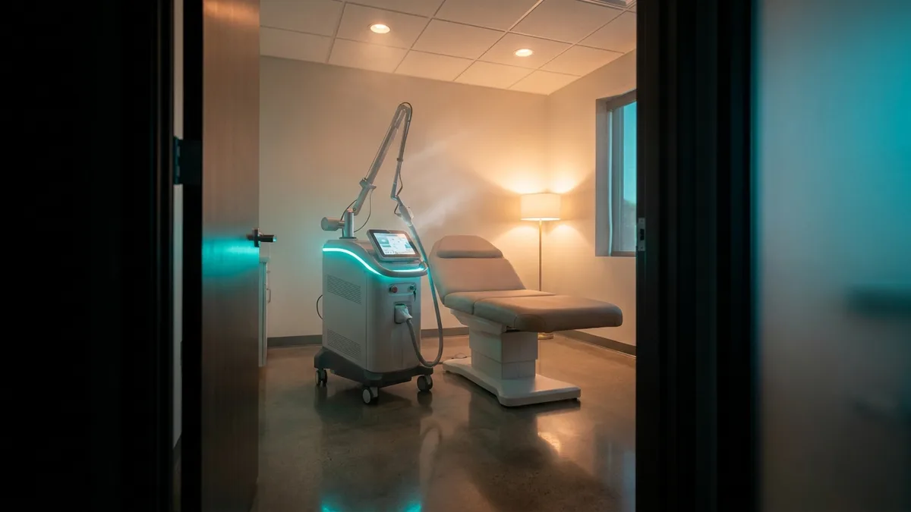
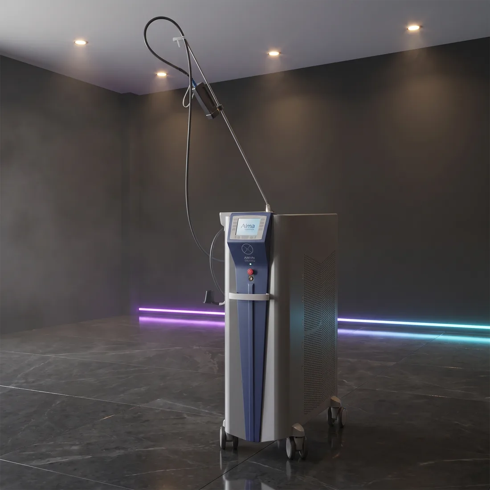

Estetik cihaz yatırımı kaç ayda kendini öder?
Cihaz alma kararının önündeki en somut soru genellikle tek cümleliktir: bu yatırım kaç ayda kendini öder? Bu sorunun cevabını size kimse dışarıdan veremez, çünkü cevabı belirleyen rakamlar sizin randevu defterinizde. Verebileceğimiz şey hesabın kurgusudur: hangi değişkenler var, her biri nasıl ölçülür, nerede yanlış varsayım yapılır. Çerçeveyi kendi verilerinizle doldurduğunuzda ortaya tahmin değil, savunulabilir bir sayı çıkar.

Hesabın iskeleti: üç satırlık bir formül
Geri dönüş hesabı özünde üç satırdan ibarettir. Önce cihazın ürettiği aylık brüt ciroyu bulursunuz: günlük seans sayısı × ortalama seans ücreti × ayda çalışılan gün. Ardından bu cironun içinden cihaza ait giderleri düşer, aylık net katkıyı elde edersiniz. Son adımda cihaz bedelini aylık net katkıya bölersiniz; çıkan sayı kaç ayda başa baş noktasına ulaşacağınızı gösterir.
Bu yönteme finansta basit geri ödeme süresi denir. Basit olmasının bir bedeli var: paranın zaman değerini, enflasyonu ve finansman maliyetini yok sayar. Cihazı vadeli ya da kiralama yoluyla alıyorsanız ödeme planının aylık yükünü ayrı bir satır olarak eklemeniz gerekir. Buna rağmen karar öncesi ilk elemede işe yarar, çünkü hangi varsayımın sonucu ne kadar oynattığını açıkça gösterir.
Kritik nokta şu: formül sabittir, değişkenler size aittir. Bir polikliniğin doluluk profili ile ilçe merkezindeki bir güzellik salonununki aynı değildir. Bu yüzden hazır bir "şu kadar ayda döner" cümlesine değil, kendi kayıtlarınızdan çıkan rakamlara güvenin.
Formülün değişkenleri ve ölçüm kaynakları
Her değişkenin bir ölçüm kaynağı olmalı. Kaynağı olmayan, yalnızca tahmin edilen her kalem sonucu belirsizleştirir. Aşağıdaki beş girdi hesabın omurgasını oluşturur; bunları sırayla kendi verinizle doldurun.
Bu girdileri doldururken en çok zorlanılan kalem günlük seans sayısıdır. Cihazın teknik kapasitesi bir üst sınırdır; hesaba girmesi gereken ise gerçekleşen randevu sayısıdır. İkisi arasındaki farkı kapatan şey cihaz değil, talep ve planlamadır.
- Günlük seans sayısı — cihazın teorik kapasitesi değil, gerçekleşen ortalama randevu sayınız. Kaynak: son üç ayın randevu kaydı.
- Ortalama seans ücreti — paket satıyorsanız paket bedelini içerdiği seans sayısına bölün. Kaynak: toplam tahsilat / gerçekleşen seans.
- Ayda çalışılan gün — resmî tatil, personel izni ve düşük sezon çıkarılmış net gün sayısı.
- İşletme gideri payı — cihazın kullandığı alan, personel zamanı ve enerji için ciro üzerinden ayırdığınız yüzde.
- Sarf ve bakım karşılığı — uç, kartuş, jel, soğutma gibi seans başına tüketilen kalemler artı periyodik bakım için aylık ayrılan karşılık.
Değişken, ölçüm ve en sık yapılan hata
Geri dönüş hesaplarının çoğu formül yanlış olduğu için değil, girdiler iyimser olduğu için tutmaz. Aşağıdaki tablo her değişkeni, ölçüm yöntemini ve sahada en sık karşılaşılan hatayı yan yana koyuyor.
Tablodaki hataların ortak paydası aynı: cihazın üretebileceği en iyi sonucu, işletmenin gerçekleşen sonucu sanmak. Girdileri ölçülebilir kaynaklara bağladığınızda hesap kendiliğinden daha temkinli hale gelir.
| Değişken | Nasıl ölçülür | Tipik hata |
|---|---|---|
| Günlük seans sayısı | Son üç ayın randevu kaydından günlük ortalama | Cihazın teorik kapasitesini doluluk yerine koymak |
| Ortalama seans ücreti | Toplam tahsilat / gerçekleşen seans sayısı | Liste fiyatını kullanıp paket indirimini yok saymak |
| Ayda çalışılan gün | Takvimden tatil ve izinler düşülerek | Ay başına 30 gün üzerinden hesap yapmak |
| Sezon dalgalanması | Son 12 ayın aylara göre ciro dağılımı | Yoğun sezon performansını tüm yıla yaymak |
| Sarf gideri | Seans başına tüketilen kalemlerin birim maliyeti | "Sarfı yok" varsaymak, uç/kartuş ömrünü sormamak |
| Personel payı | Cihaza ayrılan çalışma saatinin maliyeti | Personel zaten var diye bu kaleme sıfır yazmak |
| Bakım ve servis | Yıllık bakım karşılığının on ikiye bölünmesi | Garanti süresi sonrasını hiç planlamamak |
| Devreye alma dönemi | Kurulum, eğitim ve tanıtım süresi | İlk aydan itibaren tam doluluk varsaymak |
Cihaz seçimi hesabı nasıl değiştirir
Aynı formüle iki farklı cihaz koyduğunuzda sonuç değişir, çünkü cihaz seçimi üç kalemi doğrudan etkiler: seans süresi, hitap edilebilecek profilin genişliği ve seans başına sarf maliyeti.
Seans süresi tarama hızı, spot boyutu ve tekrarlama frekansı ile ilgilidir. Aynı bölgeyi daha kısa sürede tarayan bir yapılandırma, günlük seans sayısı değişkenini yukarı taşıyabilir; bu da formülün ilk satırını doğrudan büyütür.
Profil genişliği ise dalga boyuyla ilgili teknik bir konudur. 755 nm melanin tarafından yüksek oranda soğurulur; 1064 nm dokuda daha derine ilerler ve melanin soğurumu daha düşüktür, bu nedenle Fitzpatrick ölçeğinin koyu uçlarında farklı bir soğurum profili sunar. Tek dalga boylu bir platform (örneğin Arion Alexandrite Lazer) ile 755 ve 1064 nm'yi birlikte sunan bir platform (Light Age Epicare DUO) ya da mix diyot yapılandırmalar (Epizone Mix Diode Lazer), aynı işletmede farklı büyüklükte bir randevu havuzu anlamına gelir.
Sarf maliyeti cihaz ailesine göre belirgin biçimde ayrışır. Lazer epilasyon platformlarında seans başına tüketim genellikle sınırlıdır; buna karşılık fraksiyonel CO2, altın iğne RF veya HIFU gibi uç ve kartuş tabanlı sistemlerde atış ya da uygulama başına bir maliyet oluşur. Bu kalem hesaba girmezse aylık net katkı olduğundan yüksek görünür. Teklif aşamasında sarf kalemlerinin listesini ve tahmini ömrünü yazılı olarak isteyin.
Tek sayı değil, üç senaryo üretin
Geri dönüş hesabını tek bir sonuçla bitirmeyin. Aynı formülü üç kez çalıştırın: kötümser, gerçekçi ve iyimser. Kötümser senaryoda doluluk varsayımını belirgin biçimde aşağı çekin, ortalama seans ücretini paket indirimleri dahil alt banda yerleştirin, gider payını yukarı taşıyın. İyimser senaryoda tersini yapın.
Karar kriteriniz iyimser senaryo olmamalı. Doğru soru şudur: kötümser senaryodaki geri dönüş süresi bile işletmenin nakit akışı için katlanılabilir mi? Cevap evetse yatırım kararı sağlam bir zemine oturur. Cevap yalnızca iyimser senaryoda evetse, karar cihaza değil bir varsayıma dayanıyor demektir.
Hesabı araç üzerinde kendi rakamlarınızla yapın
Sitedeki Yatırım Geri Dönüş Hesabı aracı bu formülü kurulmuş halde sunar. Cihaz yatırımı, seans fiyatı, günlük seans sayısı, ayda çalışılan gün ve işletme gideri payı alanlarını kendi rakamlarınızla oynatırsınız; sonuç anında güncellenir. Araca Araçlar bölümünden veya doğrudan yatirim-hesaplayici.html sayfasından ulaşabilirsiniz.
Aracın amacı size bir rakam vermek değil, kendi rakamlarınızın sonucu nasıl değiştirdiğini göstermek. Doluluk varsayımını birkaç seans aşağı çektiğinizde geri dönüş süresinin nasıl uzadığını görmek, çoğu zaman sayfalarca yazıdan daha ikna edicidir. Cihaz yatırımı alanına, teklif aşamasında netleşen tutarı girersiniz.
Özetle
Geri dönüş süresi bir cihazın teknik özelliği değil, işletmenin cihazla kurduğu ilişkinin sonucudur. Aynı cihaz iki farklı işletmede iki farklı sayı üretir; farkı yaratan doluluk, fiyatlama ve gider disiplinidir. Bu yüzden en değerli adım, teklif istemeden önce yukarıdaki tabloyu kendi verilerinizle doldurmaktır. Hesabı yaptığınızda görüşme "ne kadar" sorusundan "hangi yapılandırma benim doluluk profilime uyar" sorusuna taşınır ve karar çok daha sağlam bir zemine oturur.
Sık sorulanlar
Estetik cihaz yatırımı tipik olarak kaç ayda kendini öder?
Elimde geçmiş veri yok, doluluk oranını nasıl tahmin ederim?
Sarf ve bakım giderini hesaba nasıl eklerim?
Sayfada neden cihaz fiyatı yer almıyor?
İlgili platformlar
Yazıda anlatılan teknik kalemleri gerçek cihazlar üzerinde görün.

Arion Alexandrite Lazer
755 nm AlexandriteTek platformda epilasyon, vasküler ve pigmente lezyon tedavisi; opsiyonel başlıklarla tedavi menüsünü genişletir.

Light Age Epicare DUO
755 + 1064 nmAlexandrite ve Nd:YAG tek gövdede; açık ciltten koyu cilde kadar tüm Fitzpatrick aralığını tek yatırımla karşılar.

Epizone Mix Diode Lazer
3300 W GüçEn çok kullanılan üç dalga boyu tek başlıkta; 12 inç dokunmatik arayüzle operatör eğitimi kısalır.
Bu yazıdaki hesabı kendi işletmeniz için yapalım
Cihaz seçimi, servis kapsamı ve yatırım geri dönüşü — kendi rakamlarınızla oturup konuşalım.
Ankara ve İstanbul ofislerimizden aynı gün dönüş yapılır.